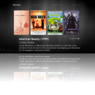
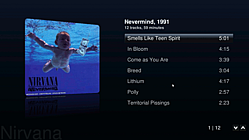
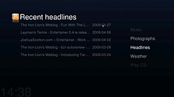

Entertainer
Archivierte Anleitung
Dieser Artikel wurde archiviert, da er - oder Teile daraus - nur noch unter einer älteren Ubuntu-Version nutzbar ist. Diese Anleitung wird vom Wiki-Team weder auf Richtigkeit überprüft noch anderweitig gepflegt. Zusätzlich wurde der Artikel für weitere Änderungen gesperrt.
Zum Verständnis dieses Artikels sind folgende Seiten hilfreich:
Entertainer  ist ein Media Center, welches sich besonders durch seine Einfachheit und einfache Bedienung auszeichnet. Das noch sehr junge, z.Zt. unbetreute Projekt ist komplett in Python geschrieben und nutzt das GStreamer Multimediaframework zur Wiedergabe. Entertainer kann somit alle durch GStreamer unterstützten Formate abspielen. Es wird zur Zeit (Oktober 2012) nicht mehr aktiv weiterentwickelt, die letzte Version stammt vom Mai 2010.
ist ein Media Center, welches sich besonders durch seine Einfachheit und einfache Bedienung auszeichnet. Das noch sehr junge, z.Zt. unbetreute Projekt ist komplett in Python geschrieben und nutzt das GStreamer Multimediaframework zur Wiedergabe. Entertainer kann somit alle durch GStreamer unterstützten Formate abspielen. Es wird zur Zeit (Oktober 2012) nicht mehr aktiv weiterentwickelt, die letzte Version stammt vom Mai 2010.
|  |
| Entertainer |
Installation¶
Das Programm ist zurzeit noch nicht in den offiziellen Paketquellen vorhanden. Um das Programm zu installieren, muss man auf ein PPA zurückgreifen oder den Quellcode selbst übersetzen. Letzte Version von Mai 2010.
Aus den Quellen¶
Adresszeile zum Hinzufügen des PPAs:
ppa:entertainer-releases/ppa
Hinweis!
Zusätzliche Fremdquellen können das System gefährden.
Ein PPA unterstützt nicht zwangsläufig alle Ubuntu-Versionen. Weitere Informationen sind der  PPA-Beschreibung des Eigentümers/Teams entertainer-releases zu entnehmen.
PPA-Beschreibung des Eigentümers/Teams entertainer-releases zu entnehmen.
Damit Pakete aus dem PPA genutzt werden können, müssen die Paketquellen neu eingelesen werden.
Nach Freischalten und anschließendem Aktualisieren der Software-Quellen muss folgendes Paket installiert [1] werden.
entertainer (ppa)
 mit apturl
mit apturl
Paketliste zum Kopieren:
sudo apt-get install entertainer
sudo aptitude install entertainer
Unter GNOME findet sich das Programm im Menü unter "Anwendungen -> Unterhaltungsmedien".
Aus dem Quellcode¶
Zuerst lädt man die neuste Version des Programms von hier  herunter. Danach entpackt [4] man das Archiv und installiert alle Pakete, die in der Datei entertainer-0.X/docs/DEPENDENCIES aufgelistet sind.
herunter. Danach entpackt [4] man das Archiv und installiert alle Pakete, die in der Datei entertainer-0.X/docs/DEPENDENCIES aufgelistet sind.
Hinweis:
-0.X steht hier für die jeweilige Versionsnummer, z.B. -0.4.2.
python-cairo
python-cddb
python-clutter
python-ctypes
python-eyed3
python-feedparser
python-glade2
python-gobject
python-gst0.10
python-gtk2
python-imaging
python-imdbpy
python-pysqlite2
python-pyvorbis
python-storm
python-twisted
mit apturl
Paketliste zum Kopieren:
sudo apt-get install python-cairo python-cddb python-clutter python-ctypes python-eyed3 python-feedparser python-glade2 python-gobject python-gst0.10 python-gtk2 python-imaging python-imdbpy python-pysqlite2 python-pyvorbis python-storm python-twisted
sudo aptitude install python-cairo python-cddb python-clutter python-ctypes python-eyed3 python-feedparser python-glade2 python-gobject python-gst0.10 python-gtk2 python-imaging python-imdbpy python-pysqlite2 python-pyvorbis python-storm python-twisted
Danach wechselt man in den Ordner entertainer-0.X [3] und installiert Entertainer mit Root-Rechten [6]:
sudo python setup.py install
Konfiguration¶
Mit der Eingabe von entertainer-content-manager [5] gelangt man zum Konfigurationsmenü von Entertainer.
| Konfigurationsmenü | |
| Menü | Beschreibung |
| "Video, Bilder und Musik" | Hinzufügen/Entfernen der zu durchsuchenden Ordner für die jeweilige Kategorie. Auch mehrere Ordner sind möglich. |
| "RSS feeds" | Hinzufügen/Entfernen von Feeds. Ändern des Aktualisierungintervalles. |
| "Wetter" | Hinzufügen und ändern der Ortschaften für die Wetteranzeige. |
| "Reset" | Leeren der Zwischenspeicher für Musik, Video, Bilder, Feeds und Wetter. |
|  |  | |
| Musikwiedergabe | Videowiedergabe | RSS- Reader |
Benutzung¶
Die Oberfläche¶
Im Hauptmenü kann zwischen den verschiedenen Funktionen, Musik, Video, Bildanzeige, RSS-Anzeige, Wetter und von CD abspielen gewählt werden. Mit Esc wird Entertainer beendet. In den jeweiligen Untermenüs werden die weiteren Bibliotheken angezeigt. Mit ⌫ kehrt man jeweils zum Hauptmenü zurück.
Bedienung¶
Entertainer wird über die Tastatur gesteuert, unten sind die möglichen Befehle aufgelistet:
Tastenkürzel¶
| Entertainer | |
| Taste(n) | Funktion |
| ↑ | nach oben |
| ↓ | nach unten |
| ← | nach links |
| → | nach rechts |
| ⏎ | Aktion ausführen |
| zurück | |
| ⌫ + Esc | Beenden |
| H | zur Hauptseite |
| F | wechselt zwischen Vollbild und Fenstermodus |
| Wiedergabe | |
| Taste(n) | Funktion |
| P | Wiedergabe oder Pause Audio/Video/Diashow |
| S | Stop Audio/Video/Diashow |
| X | Zurück |
| C | Vorwärts |
| 1 | Wählt Bildseitenverhältnis 1 für Video |
| 2 | Wählt Bildseitenverhältnis 2 für Video |
| 3 | Wählt Bildseitenverhältnis 3 für Video |
| 4 | Wählt Bildseitenverhältnis 4 für Video |
- Erstellt mit Inyoka
-
 2004 – 2017 ubuntuusers.de • Einige Rechte vorbehalten
2004 – 2017 ubuntuusers.de • Einige Rechte vorbehalten
Lizenz • Kontakt • Datenschutz • Impressum • Serverstatus -
Serverhousing gespendet von